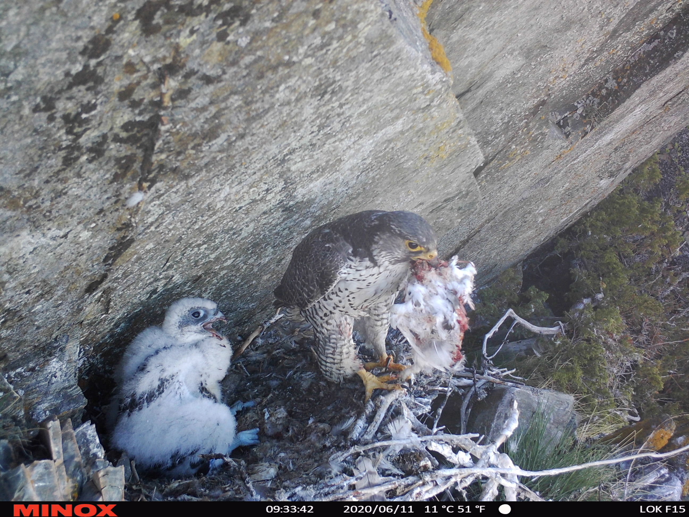

Main field projects
Our lab are involved in many projects, and collaborate with many ongoing researech and monitoring projects. The projects listed here are long-term (or - aspirational long term!) field projects that we are at leading. Students interesting in writing their thesis with us should therefore not hesitate to contact us even though you don’t find your favorite species or system listed below.
The ecology of willow ptarmigan in a changing climate

One of our major projects is a field project on willow ptarmigan (Lagopus lagopus) ecology, where the focus is on how this iconic species will be affected by ongoing climate change. The project was initiated in 2015, and our main study area is in Lierne municipality in central Norway. In 2023 the study was extended to include an additional coastal study area in Namdalseid municipality, also in central Norway.
The willow ptarmigan is a valued game species in Norway, and has a high cultural value. In addition, it is among the few avian species that stay in our mountain ecosystem throughput the year. A core element of our study has been to monitor marked individuals, but we also collect a wide array of data from unmarked birds. Based on the marked birds, we obtain information about vital rates (survival and recruitment) and movement patterns. During the breeding season, we monitor the nests of marked and unmarked birds using automatic game cameras. We also collect scats, that are used both for identifying individuals (e.g. for catpture-recapture analyses) and the diet based on DNA metabarcoding methods. The main funding for this project come from the Norwegian Environment Agency. We receive substantive help with the fieldwork from “Fjellstyrene i Lierne”, which provide valuable management relevance for our project.
Monitoring and population ecology of tetraonids

In Norway, tetraonid species - in particular willow ptarmigan - are monitored through a community based montoring program called “Hønsfuglportalen”. In addition to providing direct input to the management of these populations, the data collected through the program is an extremely valuable source as a basis to for research into the population dynamics of key species in our mountain ecosystems.
Since 2013, we have been monitoring willow ptarmigan and other tetraonide species populations across large areas across Norway. The project can be seen as a structurured participatory (also called citizen science) monitoring program, where staff from NINA and Norwegian University for Applied Sciences provide common e-infrastructure, data management routines, study design, field protocols and education of volunteer field workers. Field work is carried out in August, and is based on line transect surveys for distance sampling estimation of abundance. The field team include a pointing dog to increase detectability of birds. Participation in the program by stakeholders (including both public and private landowners) is not mandated; thus there is no unified statistical framework that regulate the sampling effort in the different regions. Since 2022, the program has also included field surveys in Northern Finland. The program is collaborating closely with several research projects, facilitating constant improvement of the program in terms of data collection and modelling of the data.
The main funding for this project come from the Norwegian Environment Agency.
Feeding ecology of gyrfalcon and golden eagle in the breeding season

The gyrfalcon and golden eagle are the predominant avian apex predators within the ecosystems of Scandinavian Mountain. Since 2018, we have utilized wildlife cameras to monitor active gyrfalcon nests in Lierne municipality, central Norway. In 2020, we extended this monitoring effort to include golden eagle nests. Our primary objective is to study the diet composition and feeding behaviour of gyrfalcons and golden eagles during their breeding season. As a serendipitous outcome, we have also uncovered unexpected interactions between various avian and mammalian apex predators.
By collaborating with other projects, we have gained access to data on territory occupancy and nesting success of gyrfalcons and golden eagles at both regional and national scales. Additionally, we gather data on annual fluctuations in prey densities from sources such as Hønsefuglportalen and Living Norway Data Network. These combined datasets allow us to explore spatiotemporal variations in the diet and breeding success of alpine apex predators, considering both biological factors (prey densities) and abiotic factors (weather data). This also enables us to model the potential impacts of climate change on predator-prey relationships.
The County Governor of Trøndelag is the primary funder of this project, while fieldwork is predominantly carried out by personnel from Fjellstyrene i Lierne.
Population ecology and status of taiga bean goose

The taiga bean goose is one of the rarest species that breeds in the mountainous regions of Norway. It has been classified as Endangered (EN) on the Norwegian Red List. Since 2010, we have been conducting a project to study the migratory behaviour and population dynamics of a small group of taiga bean geese that breed in Børgefjell National Park. The field work is mainly carried out in the mountain areas of Røyrvik municipality.
During the first phase of the project (2010-2015), we fitted GPS tags and neckbands on some geese to identify their breeding, moulting, and wintering grounds. Since then, we have mainly conducted non-invasive population monitoring by collecting samples (scats and shed feathers) for DNA analysis. In this regard, we have developed a method for individual and sex identification based on genetic (microsatellite) markers. We intend to use this data to model demographic rates (survival and reproduction) and population size.
The Norwegian Environment Agency and the County Administration of Trøndelag are the primary funders of this project.
Stress responses of grouse species to anthropogenic disturbance

High levels of stress may have consequences on immune responses, survival and reproduction in wild animals. Based on analyses of stress hormon levels in fecal samples, we will investigate relationships between human disturbances and stress responses of grouse (willow ptarmigan, rock ptarmigan, black grouse and capercaillie). Beyond increasing our knowledge of the biology of these species, this will give information relevant to grouse management in Norway and elsewhere.